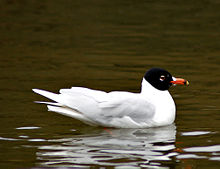
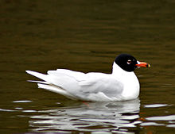

| Mediterranean Gull | |
|---|---|
|  | |
| Conservation status | |
| Binomial name | |
| Ichthyaetus melanocephalus (Temminck, 1820, coast of Adriatic Sea) |
|
| Synonyms | |
|
Larus melanocephalus |
| Mediterranean Gull | |
|---|---|
|  | |
| Conservation status | |
| Binomial name | |
| Ichthyaetus melanocephalus (Temminck, 1820, coast of Adriatic Sea) |
|
| Synonyms | |
|
Larus melanocephalus |
The Mediterranean Gull, Ichthyaetus melanocephalus, is a small gull which breeds almost entirely in Europe, mainly in the south east, especially around the Black Sea, and in central Turkey. There are colonies elsewhere in southern Europe, and this species has undergone a dramatic range expansion in recent decades. Birders often abbreviate its name to "Med Gull". As is the case with many gulls, it has traditionally been placed in the genus Larus.
It has colonised Britain, mainly in southern and eastern England with more than 90 pairs in 2000.
In winter, this bird migrates to Mediterranean and Atlantic coasts.
This gull breeds in colonies in large reedbeds or marshes, or on islands in lakes; where its population is small, it nests in Black-headed Gull colonies. Like most gulls, it is highly gregarious in winter, both when feeding or in evening roosts. It is not a pelagic species, and is rarely seen at sea far from coasts.
This species is 36-38 cm long with a 98-105 cm wingspan. It can be distinguished from the Black-headed Gulls with which it often associates by its slightly larger size, very pale grey plumage and thicker red bill. The summer adult has a black head; the bird's scientific name actually means "black-headed gull". The similar species Black-headed Gull actually has a chocolate-brown hood. Adults have no black in their wings. The hood is lost in winter, leaving just a streaked grey mask. Legs are red.
The Mediterranean Gull's feeding habits are much an opportunistic omnivore, eating fish, worms, scraps, insects, offal and carrion.
This bird takes two years to reach maturity. First year birds have a black terminal tail band and more black areas in the upperwings, but have pale underwings.
This is a noisy species, especially at colonies, with a nasal "yeah" call.

{kind=link}